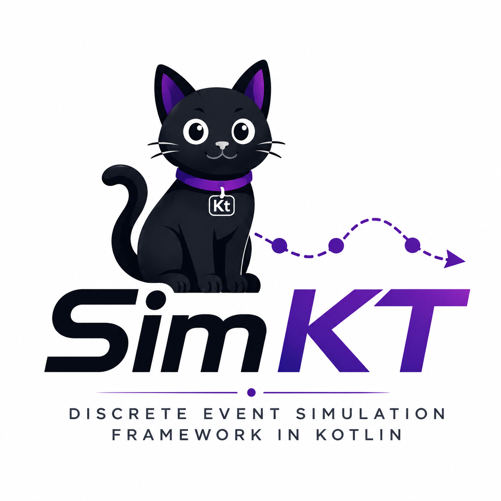

Simulações discretas em Kotlin.
SimKT é uma biblioteca experimental para modelar sistemas baseados em eventos, processos concorrentes, recursos compartilhados e dinâmicas contínuas — sem threads reais, sem tempo de espera.

Veja como funciona
Um processo suspende com hold(), avança o tempo virtual e retoma — sem bloquear a thread.
val env = Environment()
// Processo com coroutine — hold() avança o tempo virtual
env.process(SimProcess { ctx ->
repeat(3) { i ->
ctx.hold(10.0)
ctx.env.monitor.record(
ctx.now,
"Leitura ${i + 1}: alvo detectado"
)
}
})
env.run(until = SimTime(40.0))
env.monitor.printAll()Saída
sleep() real acontece.
O que o SimKT oferece?
Um núcleo pequeno e extensível para estudar e prototipar simulações de eventos discretos com Kotlin.
Tempo virtual
SimTime controla o relógio da simulação. Nenhuma espera real — o motor avança evento a evento.
Processos
SimProcess usa coroutines Kotlin para modelar comportamentos sequenciais com hold(), await() e suspensão.
Primitivos
SimResource, SimChannel, SimQueue e SimContainer para modelar recursos, filas e estoques.
Contínuo + Discreto
SimContinuousModel integra dinâmicas de passo fixo (bateria, movimento, sensores) dentro do loop discreto.
Instalação rápida
Clone o repositório e construa com Maven. A biblioteca fica disponível como JAR local.
-
Clone o repositório
git clone https://github.com/PedroMagno11/SimKT -
Compile com Maven
cd SimKT && mvn clean package -
Adicione ao seu projeto
O JAR fica em
target/simkt-0.1.0.jar. Veja Instalação para opções de dependência.